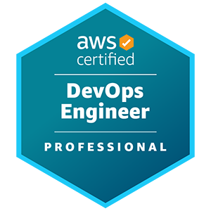

Introduction
Welcome to my web resume! I built this web app on AWS as part of the Cloud Resume Challenge.
The Cloud Resume Challenge is a hands-on project designed by Forrest Brazeal to help newbies bridge the gap from cloud certification to cloud job. It incorporates many of the skills that real cloud and DevOps engineers use in their daily work. You can read more about it here!
About Me
Results-focused digital marketing leader with an extensive understanding of digital marketing & public relations looking to transition into the Cloud Computing industry as a DevOps Engineer / Cloud Engineer. I have experience in client–facing and managerial positions and have achieved 3 certifications.
My Certifications
Badges are also available on Credly
AWS Certified Solutions Architect - Professional
Validation#: 4013RGKCSFB1QW5Y
Validate here

AWS Certified DevOps Engineer - Professional
Validation#: T0HLVK71SEF1Q35Y
Validate here
AWS Certified Solutions Architect - Associate
Validation#: S8KPVXMC5FR1QTW4
Validate here
Tools & Programming Languages
My Skills
AWS Leadership Principles Driven ✔
DevOps & Solutions Architect Mindset ✔
Infrastructure as Code (CloudFormation & Terraform) ✔
Resume
Education
University of Minnesota
2015 — 2019
Bachelor of Science in Business & Marketing
Minor in Leadership
Technical Projects
Cloud Resume Challenge
Designed a decoupled resume web app (this site) that utilizes AWS serverless framework, AWS S3, and AWS Route53 to host a static site built with HTML, CSS, & Javascript.
Built a CI/CD pipeline to automate the integration and deployment of front and back-end code with GitHub Actions and AWS SAM
Implemented a system to track site visits using AWS DynamoDB, Lambda, and API Gateway
Enforced security through HTTPS connection and ensured availability by accelerating content delivery using AWS CloudFront
AWS Three-tier ESports Web Application
Deployed and hosted a highly-available Esports WordPress application with scalable and resilient architecture using AWS EC2, RDS, Route 53, ASG and VPC
Created a Launch template to provide automatic provisioning to accelerate build time
Ensured elasticity via Auto Scaling Group and Application Load Balancer based on user and request load
AWS Serverless Reminder Application
Implemented a serverless reminder application using AWS Step Functions, Lambda, API Gateway, S3, SNS, and SES
Integrated a static frontend site hosted on a S3 bucket that passes inputted data to a state machine
Configured frontend site and state machine to send either an email or SMS reminder with personalized end user message
AWS & on-Premise (Simulated) Hybrid Directory
Integrated multiple on-premise active directory domains using AWS VPC, IGW, Workspaces, and AWS FSx
Incorporated two-way forest trust and used AWS services with on-premise identities
Work Experience
Loan Specialist @ Small Business Association
Nov 2020 — May 2022
Executed the loan origination process, including ordering credit reports, appraisals, preliminary title reports, criminal history, and tax filings
Investigated and interpreted personal and business data provided by businesses and nonprofits to resolve discrepancies to meet loan requirements
Assisted small business owners and nonprofits obtain 85 million dollars in unsecured loans and secured loans as well as 30 million dollars in disaster grants
Social Media & Partnerships Manager @ Intellix Media
Jan 2019 — Nov 2020
Owning the influencer engagement roadmap, collaborated with various influencers in different niches to implement marketing strategies for clients to drive new followers to social media pages and increase conversions
Served as Synergist connecting influencers, campaign managers, and clients to our marketing campaigns
Managed existing strategic brand partnerships and nurtured the daily relationships with influencers
Marketing Strategist Intern @ Jessen Media
Jan 2018 — May 2018
Implemented a detailed content strategy for three Jessen Media brands that involved creation + curation of content related to all brands
Developed an email marketing strategy to grow the audience base of three Jessen Media brands to drive ecommerce sales using Hootsuite
Integrated an consumer-oriented sales strategy to incentivize customers on offers that were promoted by the Jessen Media brands
Introduced a conversion strategy to boost sales through display and social media ads
Technical Support Specialist @ University of Minnesota Information Technology
Nov 2015— Dec 2018
Acted as a point of support contact for managing telecommunications and coordinated the resolution of University wide system outages
Diagnosed and resolved a range of hardware, software, networking and connectivity issues while delivering technical training on hardware/software to end-users
Utilized Active Directory, System Center Configuration Manager, Microsoft Powershell, Bomgar, Service Now, and Jamf application to perform various day-to-day duties
Ensured proper maintenance and configuration of workstations, printers, and all computer peripherals across 4 core locations with over 100 devices
Created help desk knowledge base documentation with step by step instructions on how to resolve some of the most common computer, networking, and software issues for University of Minnesota systems
Blog
CloudDec 3, 2022
See how I've built a highly-available web app in AWS with CI/CD worklow to showcase my resume